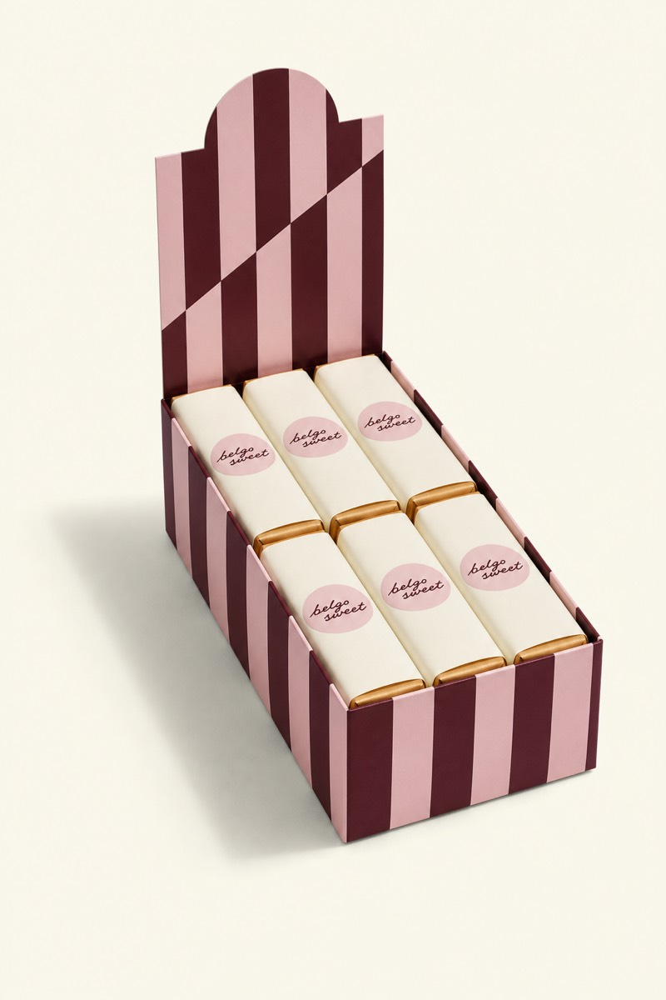
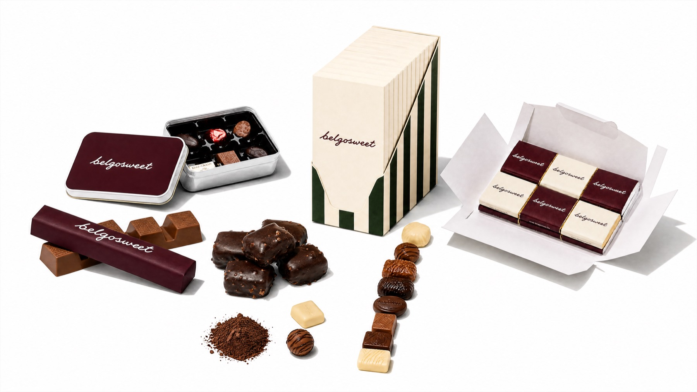

Belgian art of gourmet gifting.
Belgische chocolade, koekjes en snoep met je logo. Vanaf 250 stuks, prijs op maat van je oplage.
Een greep uit ons aanbod
Zestien categorieën, van pralines tot adventskalenders. Merken, gelegenheden en HoReCa-toepassingen zitten eronder als filter.
Je logo hoort op de doos, niet erop geplakt.
Wij drukken op de verpakking zelf — van sleeve tot volledige doosbedrukking. Je krijgt een proefdruk te zien voordat de oplage vertrekt, en vanaf 250 stuks rekenen we een prijs op maat van je aantal.
Achter elke aanvraag zit één persoon, van offerte tot levering. Dat doen we al zevenentwintig jaar, voor meer dan vijfhonderd bedrijven. Het assembleren en verpakken gebeurt al meer dan tien jaar samen met Axedis, een sociale inschakelingsonderneming — een van de weinige dingen waar we bewust nooit op besparen.
Meer over hoe we werken

Dit seizoen
Adventskalenders en eindejaarsgeschenken worden in september vastgelegd. Wie in november belt, kiest uit wat er nog staat.
Bestellen vóór 30 september Levering vanaf half november Personalisatie +3 weken
In de kijker
Alle producten- 27
- jaar ervaring
- 500+
- bedrijven bediend
- één
- vast aanspreekpunt
“Ze weten wat we vorig jaar bestelden. Dat scheelt ons elke december een week werk.”
Verder waar je gebleven was
Klaar om een offerte te vragen?
Zet samen wat je nodig hebt op één lijst. Wij rekenen door en bellen terug.